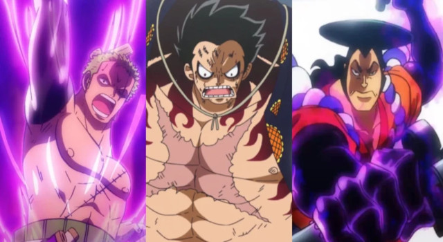

História
Haki é a capacidade de sentir a energia espiritual (Kenbunshoku), usar a força vital (Busoshoku) e dominar inimigos (Haoshoku).
Haki foi visto pela primeira vez quando Shanks usou para assustar um Rei dos Mares para salvar Luffy quando ele era uma criança. O termo "Haki" foi cunhado pela primeira vez e usado muito mais tarde, quando Barba Negra estava comentando sobre a recompensa de Luffy em Jaya, e foi sugerido durante a visita de Shanks com Barba Branca.
Devido ao fato de que Haki origina-se do espírito de um indivíduo e não de seu corpo, mesmo se o espírito do usuário seja transferido para outro corpo, ele ainda é capaz de usar Haki como se estivesse em seu corpo original. Haki também pode se tornar mais forte, especialmente quando um usuário de Haki luta contra adversários mais fortes. Apesar de suas grandes capacidades, o Haki não é ilimitado, pois pode ser esgotado pelo uso excessivo, tornando o usuário incapaz de usá-lo por um determinado período enquanto se regenera.
Tipos de Haki
Haki é separado em três categorias, ou "tipos", onde cada um tem níveis de uso, de modo que mesmo dois usuários proficientes podem não ter a mesma força. A maioria das pessoas que podem usar o Haki tendem a ter um tipo em que são melhores e, como resultado, focam nesse tipo. No entanto, uma pessoa pode melhorar suas habilidades em todos os tipos de Haki, apenas requer mais trabalho. Além disso, pelo menos dois tipos de Haki também podem ser usado simultaneamente.
Kenbunshoku Haki, que concede aos usuários um sexto sentido do mundo em torno dele e habilidades premonitórias limitadas, prevendo os movimentos inimigos
Busoshoku Haki, que permite que o usuário use o seu espírito como armadura para se defender contra ataques ou para fazer seus próprios ataques mais potentes, como criar uma armadura invisível que pode ser utilizada tanto como defesa, tanto por meios ofensivos.
Haoshoku Haki, um tipo raro de Haki que apenas um em um milhão podem usar que concede ao usuário a capacidade de dominar a vontade dos outros, fazendo com que apenas os fortes de espírito prevaleçam, e os fracos, adormeçam ou caiam diante do Haki.